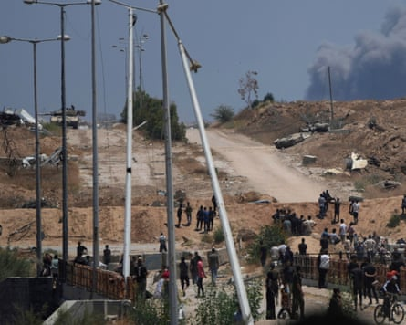

Medical officials, humanitarian workers and doctors in Gaza say they have been overwhelmed by almost daily “mass casualty incidents” as they struggle to deal with those wounded by Israeli fire on Palestinians seeking aid.
Doctors said many of the casualties they are treating describe being shot as they try to reach distribution sites run by the Gaza Humanitarian Foundation (GHF), a secretive US- and Israel-backed organisation that began handing out food in late May.
Others have been injured as huge crowds form around convoys sent into Gaza by the UN, many of which are stopped and looted.
Dr Mohammed Saqr, director of nursing at Gaza’s Nasser Medical Complex in Khan Younis, said he had personally witnessed countless mass casualty incidents in recent weeks.
“The scenes are truly shocking – they resemble the horrors of judgment day. Sometimes within just half an hour we receive over 100 to 150 cases, ranging from severe injuries to deaths … About 95% of these injuries and deaths come from food distribution centres – what are referred to as the ‘American food distribution centres’,” Saqr said.
The casualties among those seeking aid – which totalled 640 killed and more than 4,500 injured between 27 May and 2 July, according to the Ministry of Health in Gaza – have strained a system that is already close to collapse.
“Every bed is occupied by a patient, and these additional injuries place an unimaginable burden on us. We are forced to treat patients on the floor of the emergency department … Most of these injuries are gunshot wounds to the chest and head … Patients [are] with arriving with amputated legs and arms,” Saqr told the Guardian.
The International Committee of the Red Cross (ICRC) said on Tuesday its doctors in Gaza had seen a sharp surge over the past month in mass casualty incidents linked to aid distribution sites.
Since the launch of the new aid distribution system, which Israel insists is necessary to prevent Hamas diverting humanitarian assistance, the ICRC’s 60-bed field hospital in Rafah, in the south of Gaza, has treated more than 2,200 weapon-wounded patients and has registered more than 200 deaths.
“The scale and frequency of these incidents are without precedent. In just over a month, the number of patients treated has surpassed the total seen in all mass casualty events during the entire previous year,” the ICRC said in a statement.
“Among the wounded are toddlers, teenagers, elderly, mothers – and overwhelmingly, young men and boys. Most say they were simply trying to get food or aid for their families.”
An 86-bed field hospital run by UK-Med in al-Mawasi, on the coast of southern Gaza, has also received many casualties who were seeking aid when they were hurt.
“Since I arrived there have been a lot of gunshot injuries. They tell me how they were injured, and say it was at or near food distribution sites,” said Dr Clare Jeffreys, a British emergency medicine specialist who is working at the hospital.
One patient with severe abdominal wounds told Jeffreys he had been injured as he picked up a box of food at a distribution site.
There was no independent confirmation of the claim and the GHF has strenuously denied that any injuries were inflicted at any of its sites, blaming Israeli troops firing on Palestinians who are trying to reach the four hubs they have established in southern and central Gaza.
Israeli tanks overlook a humanitarian aid distribution centre in Khan Younis.Photograph: Abdel Kareem Hana/AP
It said in a statement: “To date, there have been no incidents or fatalities at or in the immediate vicinity of any of our distribution sites during our operating hours.”
The organisation said this week it has distributed 62m meals in the territory and was “working tirelessly to distribute free food aid directly to the people of Gaza safely and without interference”.
The Israeli military has repeatedly said it does not target civilians, takes all feasible precautions to avoid harm to non-combatants and abides by international law.
But following a report in Haaretz newspaper, which quoted soldiers describing orders to fire on civilians seeking aid, Israel’s military said it was reviewing its operations around aid distribution sites.
Jeffreys said the UK-Med hospital was also suffering from acute shortages of basic supplies.
“We are really struggling … We are running out of external fixators, which are vital for [treating] open fractures, and critical medicines including pain killers, antibiotics and anaesthetics. For some things, there is just zero stock,” she said.
The health care system in Gaza has been decimated during the 21-month conflict, which was triggered in October 2023 when Hamas militants launched a surprise attack into Israel, killing 1,200, mostly civilians, and taking 250 hostages.
In the ensuing offensive that Israel launched into Gaza, more than 57,000 Palestinians have been killed, mostly civilians, and much of the territory reduced to rubble.
Nearly half of the territory’s 36 hospitals have been put out of service and the remaining facilities are operating at a fraction of their usual capacity. All struggle with acute shortages of essential medical supplies and basic equipment such as respirators, X-ray machines, scanners or even lamps for operating theatres.
“Staff are racing to treat an unrelenting tide of injuries, the vast majority caused by gunfire … [which] has overwhelmed Gaza’s shattered healthcare system, pushing its already-diminished capacity past its limit,” the ICRC said.
Shortages are now more acute than since the beginning of the war, medics told the Guardian, with a lack of fuel, which runs generators that provide almost all power, threatening an almost total shutdown of all medical services.
For 11 weeks months, Israel blocked all food, medicine and other supplies from entering Gaza, accusing Hamas of diverting aid to fund its military and other activities, though the UN said its monitoring systems were robust. Since mid-May, Israel has allowed in a trickle of aid, including medical supplies.
“In the previous rotations, we would work in the operating theatre on between eight and 10 cases. Right now, we are working on 30-40 cases per day,” said Haitam al-Hasan, an operating theatre nurse at the ICRC’s Rafah hospital.
“We have people screaming, rushing, trying to be the first in the line because, of course, everybody wants to be treated first. We have a variety of injuries, mostly complex injuries, blast injuries, but mainly gunshot injuries.”
According to the Gaza Health Ministry, 1,580 doctors and medical personnel have been killed in the conflict.
On 2 July, an Israeli airstrike killed Dr Marwan al-Sultan , a renowned and highly experienced cardiologist and director of the Indonesian hospital in Gaza.
Among the healthcare workers killed in the past 50 days were three other doctors, the chief nurses of the Indonesian hospital and al-Nasser children’s hospital, one of Gaza’s most senior midwives, a senior radiology technician and dozens of young medical graduates and trainee nurses.